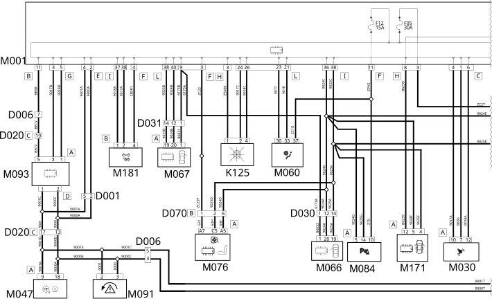
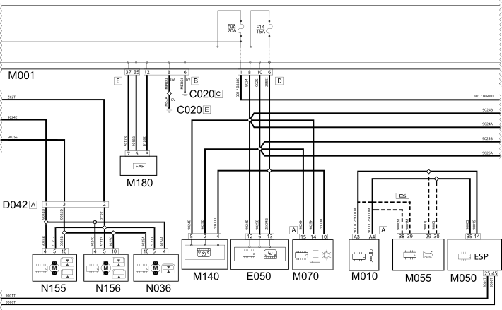
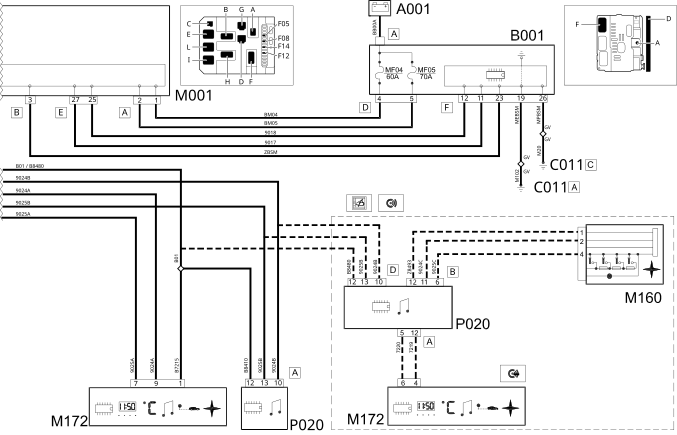

E1050 CAN CONNECTION LINES - WIRING DIAGRAM
- Path
- Electrical equipment > 1 ELECTRICAL FUNCTIONS > E10 POWER SUPPLY AND EARTHS > E1050 CAN CONNECTION LINES > E1050 CAN CONNECTION LINES - WIRING DIAGRAM
- Kind
- wiring diagram
- Applies to
- engines: 2.0 16V JTD, 2.2 16V JTD; all production periods; only with equipment: MY 2005
- Interactive page
- https://sloeber94.github.io/elrnDB-fUlss/en/#/179008175
Applies to: engines: 2.0 16V JTD, 2.2 16V JTD; all production periods; only with equipment: MY 2005



Components
Component code | Description | Reference to the assembly |
|---|---|---|
BATTERY | ||
ENGINE COMPARTMENT JUNCTION UNIT | ||
RIGHT FRONT EARTH | - | |
FRONT/DASHBOARD COUPLING | - | |
FRONT/REAR COUPLING | - | |
DASHBOARD/REAR COUPLING | - | |
DRIVER'S FRONT DOOR COUPLING | - | |
PASSENGER FRONT DOOR COUPLING | - | |
COURTESY LIGHT COUPLING | - | |
DRIVER'S SEAT COUPLING | - | |
INSTRUMENT PANEL | ||
RAIN AND DUSK SENSOR | - | |
BODY COMPUTER | ||
ENGINE MANAGEMENT CONTROL UNIT | ||
ALARM CONTROL UNIT | - | |
TYRE INFLATION PRESSURE CONTROL UNIT | - | |
ABS CONTROL UNIT | ||
AUTOMATIC TRANSMISSION CONTROL UNIT | - | |
AIR BAG CONTROL UNIT | ||
DRIVER'S DOOR CONTROL UNIT (NPG) | ||
PASSENGER DOOR CONTROL UNIT (NPP) | - | |
CLIMATE CONTROL SYSTEM CONTROL UNIT | - | |
Seats/mirrors with memory control unit | - | |
PARKING SENSOR CONTROL UNIT | - | |
SLEWING CONTROL UNIT | - | |
STEERING WHEEL NODE CONTROL UNIT (NVO) | ||
WARNING LIGHTS AND MILOMETER CONTROL UNIT (NSO) | - | |
CONNECT CONTROL PANEL | - | |
SLIDING SIDE DOOR NODE | ||
MULTIFUNCTION SCREEN NODE | - | |
DIESEL ADDITIVE CONTROL UNIT | ||
Trailer control unit | - | |
FRONT SUN ROOF MOTOR | ||
CENTRE SUN ROOF MOTOR | ||
REAR SUN ROOF MOTOR | ||
RADIO | - |
Topics linked from this page (44)
- 1060G DIESEL INJECTION PRESSURE PUMP ELECTRONIC CONTROL
- 1080G F.A.P. EMISSION CONTROL SYSTEM
- 3340A ABS CHECK/ADJUSTMENT DEVICES
- 5505A MULTI-FUNCTION COMPONENTS
- 5550A STALK UNIT
- 5560B ANALOGUE CONTROL PANEL
- 5580C AIR BAG SYSTEM
- 7030B SLIDING ROOF
- A001 BATTERY
- B001 ENGINE COMPARTMENT JUNCTION UNIT
- C011 RIGHT FRONT EARTH
- D001 FRONT/DASHBOARD COUPLING
- D006 FRONT/REAR COUPLING
- D020 DASHBOARD/REAR COUPLING
- D030 DRIVER'S FRONT DOOR COUPLING
- D031 PASSENGER FRONT DOOR COUPLING
- D042 COURTESY LIGHT COUPLING
- D070 DRIVER'S SEAT COUPLING
- E050 INSTRUMENT PANEL
- K125 RAIN AND DUSK SENSOR
- M001 BODY COMPUTER
- M010 ENGINE MANAGEMENT CONTROL UNIT
- M030 ALARM CONTROL UNIT
- M047 TYRE INFLATION PRESSURE CONTROL UNIT
- M050 ABS CONTROL UNIT
- M055 AUTOMATIC TRANSMISSION CONTROL UNIT
- M060 AIR BAG CONTROL UNIT
- M066 DRIVER'S DOOR CONTROL UNIT (NPG)
- M067 PASSENGER DOOR CONTROL UNIT (NPP)
- M070 CLIMATE CONTROL SYSTEM CONTROL UNIT
- M076 Seats/mirrors with memory control unit
- M084 PARKING SENSOR CONTROL UNIT
- M091 SLEWING CONTROL UNIT
- M093 STEERING WHEEL NODE CONTROL UNIT (NVO)
- M140 WARNING LIGHTS AND MILOMETER CONTROL UNIT (NSO)
- M160 CONNECT CONTROL PANEL
- M171 SLIDING SIDE DOOR NODE
- M172 MULTIFUNCTION SCREEN NODE
- M180 DIESEL ADDITIVE CONTROL UNIT
- M181 Trailer control unit
- N036 FRONT SUN ROOF MOTOR
- N155 CENTRE SUN ROOF MOTOR
- N156 REAR SUN ROOF MOTOR
- P020 RADIO